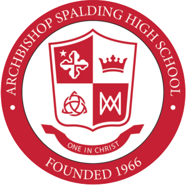

My Resume
Showcasing my work experience and skills.
Education

University of Maryland, College Park
Bachelor of Arts in Technology and Information Design
2022-2026 | Senior

Activites and Societies:
Rugby Team
Swim Team
National Honor Society
National Math Honor Society
Spanish National Honor Society
Science Club
Top 5% of graduating class
Archbishop Spalding High School
2018-2022 | Alumni
Technical Experience
University of Maryland Dynamic Effects Laboratory - Lab Assistant
September 2023 - May 2024
Terps Racing Formula IC - Composites Sub-team
January 2023 - May 2023
Leadership
Assistant Manager - Crofton Village Pools
June 2024 - August 2025
Vice President of Alumni Relations - Alpha Sigma Phi
April 2025 - Present
Relevant Skills
Arduino
PrusaSlicer
Python
MatLab
C++
HTML
CSS
JavaScript
Microsoft Office